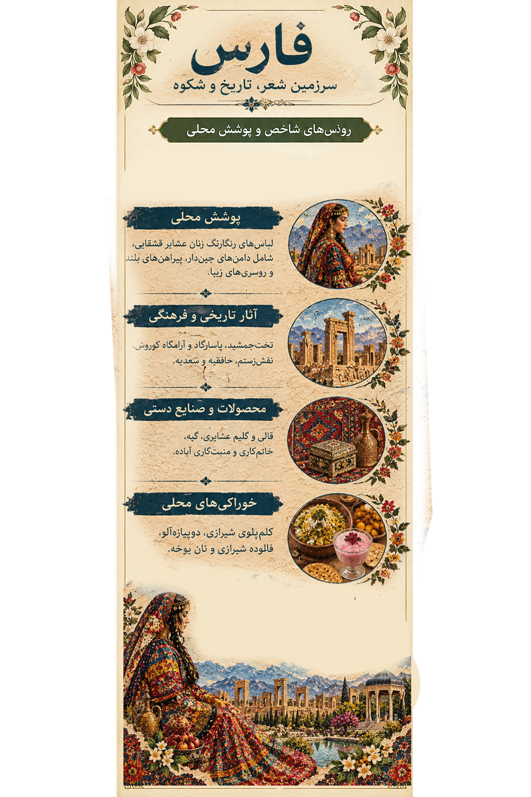

منطقه بعدی از سفر تصویری ماThe next stop in our visual journey
فارسFars
سرزمین شعر، تاریخ و شکوهLand of Poetry, History and Grandeur
از نقشبرجستههای ایران باستان تا لباسهای رنگارنگ زنان قشقایی؛
فارس روایت پیوند تاریخ، طبیعت و زندگی مردم است.
From ancient reliefs to the colorful clothing of Qashqai women,
Fars tells a story of history, nature and everyday life.
01
اثر هنری فارسFars Artwork
تصویری از پوشش رنگارنگ زنان قشقایی در کنار چشماندازهای تاریخی
و فرهنگی استان فارس.
A visual story of colorful Qashqai women's clothing alongside
the historical and cultural landscapes of Fars.
اثر هنری: مریم ساعیArtwork: Maryam Saei

لیبل اطلاعاتی منطقه فارسFars Region Information Label
02
پوشش زنان فارسWomen's Traditional Clothing
پوشش زنان فارس با توجه به تنوع قومی، شیوه زندگی و اقلیم منطقه
یکسان نیست. لباس زنان قشقایی از نمونههای شاخص پوشش عشایری
این استان است؛ پوششی که با رنگهای زنده، دامنهای چیندار،
پیراهن بلند، بالاپوش و روسری شناخته میشود.
Women's clothing in Fars varies according to local communities,
ways of life and climate. Qashqai women's dress is a distinctive
example of the province's nomadic heritage, known for vivid
colors, layered skirts, long dresses, outer garments and scarves.
لباس زنان قشقاییQashqai Women's Dress
در نمونههای سنتی، دامنهای پرچین و چندلایه، پیراهن بلند،
آرخالق یا بالاپوش و روسری از اجزای قابل مشاهدهاند.
رنگ و تزئینات با توجه به زمان، موقعیت و رسم محلی تغییر میکند.
Traditional examples may include full layered skirts,
long dresses, an outer garment known as an arkhaleq,
and a headscarf. Colors and details vary by occasion
and local tradition.
رنگ و نقشColor and Pattern
رنگهای پرطراوت و پارچههای طرحدار، در کنار زیورآلات
و سربندها، در بسیاری از بازنماییهای پوشش قشقایی دیده میشوند.
بااینحال، پوشش همه زنان و همه گروههای محلی یکسان نیست.
Bright colors, patterned fabrics, jewelry and head coverings
appear in many representations of Qashqai dress. However,
clothing is not identical across all women or communities.
یادداشت پژوهشی:Research note:
برای نسبت دادن یک مدل لباس به روستایی مشخص، باید نام روستا
و ویژگیهای پوشش با منبع معتبر یا روایت محلی تطبیق داده شود.
A specific garment should only be attributed to a particular
village after checking reliable sources or local testimony.
03
مناطق و زندگی محلیLocal Areas and Ways of Life
برای شناخت پوشش و فرهنگ فارس، بررسی مناطق مختلف استان اهمیت دارد.
شیراز، فیروزآباد، فراشبند، مرودشت، کازرون، آباده، استهبان و لارستان
هرکدام بخشی از تنوع فرهنگی و اقتصادی فارس را نشان میدهند.
Understanding Fars requires looking beyond Shiraz. Areas such as
Firuzabad, Farashband, Marvdasht, Kazerun, Abadeh, Estahban and
Laristan contribute to the province's cultural and economic diversity.
فیروزآباد و فراشبندFiruzabad and Farashband
از مناطق مناسب برای مطالعه زندگی عشایری و فرهنگ قشقایی؛
در معرفی پوشش باید به گروه محلی و شیوه زندگی توجه کرد.
Important areas for exploring nomadic life and Qashqai culture.
Clothing descriptions should reflect the particular community
and way of life.
شیراز و روستاهای پیرامونShiraz and Surrounding Villages
باغها، کشاورزی، معماری تاریخی و سنتهای خوراکی، بخشهایی
از زندگی فرهنگی این ناحیه را شکل میدهند.
Gardens, agriculture, historic architecture and food traditions
are important parts of life in this area.
آبادهAbadeh
این شهر به هنر منبتکاری چوب شهرت دارد؛ هنری که در کنار
دیگر صنایعدستی، بخشی از هویت فرهنگی فارس است.
Abadeh is known for wood inlay and carving traditions,
part of the province's wider craft heritage.
استهبان و لارستانEstahban and Laristan
استهبان با انجیر و لارستان با خوراکیها و شیرینیهای محلی
شناخته میشوند. فرهنگ جنوب و شرق فارس نیز تنوع ویژهای دارد.
Estahban is associated with figs, while Laristan is known
for local foods and sweets. Southern and eastern Fars
have distinctive cultural traditions.
04
آثار تاریخی و طبیعتHistoric Sites and Nature
تخت جمشید و نقش رستمPersepolis and Naqsh-e Rostam
یادگارهای مهم تاریخ ایران باستان در نزدیکی مرودشت که
نقش برجستهای در شناخت هنر و معماری دوره هخامنشی و ساسانی دارند.
Major landmarks near Marvdasht that reveal important aspects
of Achaemenid and Sasanian art and architecture.
پاسارگادPasargadae
محوطهای باستانی با آرامگاه کوروش بزرگ و بقایای بناهای
دوره هخامنشی.
An ancient site containing the tomb of Cyrus the Great
and remains of Achaemenid structures.
باغ ارم و حافظیهEram Garden and Hafezieh
باغ ایرانی، درختان سرو و یاد حافظ، پیوند میان طبیعت،
شعر و هویت فرهنگی شیراز را به تصویر میکشند.
Persian garden design, cypress trees and the memory of Hafez
connect nature, poetry and Shiraz's cultural identity.
مسجد نصیرالملک و مجموعه وکیلNasir al-Mulk Mosque and Vakil Complex
شیشههای رنگی مسجد نصیرالملک و معماری بازار وکیل،
از جلوههای شاخص معماری تاریخی شیراز هستند.
The colored glass of Nasir al-Mulk Mosque and the architecture
of Vakil Bazaar are notable features of historic Shiraz.
05
غذاها و شیرینیهای محلیLocal Foods and Sweets
کلمپلوی شیرازیShirazi Kalam Polo
غذایی شناختهشده با برنج، کلم قمری، سبزیهای معطر
و معمولاً کوفتهریزه.
A well-known rice dish made with kohlrabi, aromatic herbs
and usually small meatballs.
دوپیازهآلوDopiazeh Aloo
غذای ساده و محبوب شیرازی بر پایه سیبزمینی، پیاز
و ادویههای محلی.
A popular Shirazi dish made primarily with potatoes,
onions and spices.
آش سبزی و قنبرپلوAsh-e Sabzi and Ghanbar Polo
دو نمونه از خوراکهای شناختهشده شیراز که در روایت
خوراک محلی این استان جایگاه ویژهای دارند.
Two well-known dishes associated with Shiraz's local food culture.
فالوده شیرازیShirazi Faloodeh
دسری خنک و رشتهای که معمولاً با شربت و آبلیمو
سرو میشود.
A refreshing dessert made with thin starch noodles,
syrup and often lime juice.
نان یوخهYoukheh Pastry
شیرینی نازک و لایهلایه شیراز که اغلب با پودر قند
پوشانده میشود.
A thin, layered Shirazi pastry often finished with powdered sugar.
مسقطی و رنگینکMasghati and Ranginak
مسقطی در شیراز و لارستان محبوب است و رنگینک نیز در بخشهای
جنوبی استان و مناطق گرمسیر رواج دارد.
Masghati is popular in Shiraz and Laristan, while ranginak
is common in warmer parts of southern Fars.
06
محصولات، سوغات و صنایعدستیProducts, Souvenirs and Crafts
انجیر استهبانEstahban Figs
انجیر خشک استهبان از محصولات شناختهشده فارس است و
پیوند دیرینه کشاورزی با اقلیم منطقه را نشان میدهد.
Dried figs from Estahban are a recognized regional product,
reflecting the relationship between agriculture and climate.
خرما و مرکباتDates and Citrus
در نواحی گرمتر استان، خرما و محصولات باغی از محصولات
مهم محلی به شمار میروند.
Dates and orchard crops are important products in the
warmer parts of the province.
قالی، گلیم، گبه و جاجیمCarpets, Kilims, Gabbehs and Jajims
دستبافتههای عشایری با نقشهای هندسی و الهامگرفته از
طبیعت، از جلوههای مهم هنرهای سنتی فارس هستند.
Nomadic textiles with geometric and nature-inspired patterns
are an important part of Fars's traditional arts.
خاتم شیراز و منبت آبادهShiraz Khatam and Abadeh Woodcarving
خاتمکاری با قطعات ظریف هندسی و منبتکاری با نقشهای
برجسته چوبی، بخشی از میراث هنری استاناند.
Khatam inlay uses fine geometric patterns, while woodcarving
creates raised designs. Both are part of the region's craft heritage.
بهارنارنج و عرقیات گیاهیOrange Blossom and Herbal Distillates
عطر بهارنارنج و عرقیات گیاهی با باغها و سنتهای خوراکی
و خانگی شیراز پیوند دارد.
Orange blossom fragrance and herbal distillates are associated
with Shiraz's gardens and culinary traditions.
07
منابع و مطالعه بیشترSources and Further Reading
این منابع برای مطالعه آثار تاریخی، میراث فرهنگی و پوششهای
سنتی به کار میآیند. اطلاعات مربوط به هر روستا باید جداگانه بررسی شود.
These resources support research on historical sites, cultural
heritage and traditional dress. Village-specific details should
be verified individually.
Encyclopaedia Iranica
— دانشنامه ایرانیکا؛ برای پژوهش درباره فرهنگ و پوشاک ایرانResearch on Iranian culture and clothing
UNESCO — Persepolis
— اطلاعات میراث جهانی تخت جمشیدWorld Heritage information on Persepolis
UNESCO — Pasargadae
— اطلاعات میراث جهانی پاسارگادWorld Heritage information on Pasargadae
Visit Iran
— درگاه معرفی جاذبهها و میراث فرهنگی ایرانIran's tourism and cultural heritage portal
خبرگزاری ایسنا
— برای یافتن گزارشهای فارسی درباره میراث محلی و صنایعدستیPersian reporting on local heritage and crafts